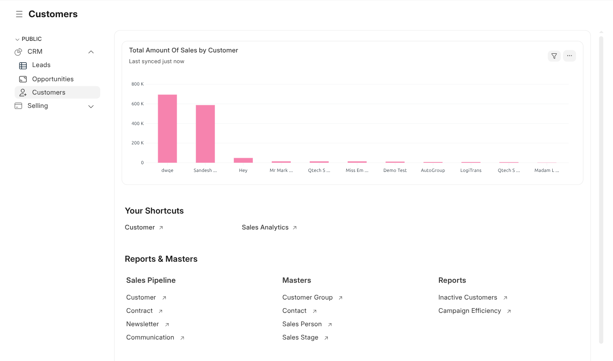
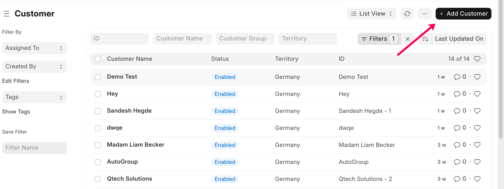

Customers
Customers Workspace
Path: CRM → Customers
The Customers workspace provides insights into customer-wise sales,
quick access to customer records, and reports required to manage ongoing
business relationships.

Total Amount of Sales by Customer
This chart displays the total sales amount generated by each customer.
It helps identify high-value customers and analyze customer contribution
to overall revenue.
- Shows customer-wise revenue distribution
- Helps track top-performing customers
- Supports strategic account management
Your Shortcuts
The Your Shortcuts section provides quick access to commonly
used customer-related actions.
- Customer – View and manage customer records
- Sales Analytics – Analyze customer and sales performance
Note: Shortcut visibility depends on user roles and permissions.
Reports & Masters
Sales Pipeline
- Customer
- Contract
- Newsletter
- Communication
Masters
- Customer Group
- Contact
- Sales Person
- Sales Stage
Reports
- Inactive Customers
- Campaign Efficiency
Note: Access to reports and master data is controlled through role-based permissions.
Create a Customer
Path: From Lead or Opportunity → Click Create → Customer
Path: CRM → Customers → New

Steps
- Verify customer details
- Select Customer Group and Territory
- Add Contact and Address details
- Click Save
Purpose
To maintain customer master data and enable selling transactions
such as quotations, sales orders, and invoices.
Using Customer Records
- Create Quotations and Sales Orders
- Track customer communication history
- Analyze customer-wise sales performance
- Manage long-term customer relationships